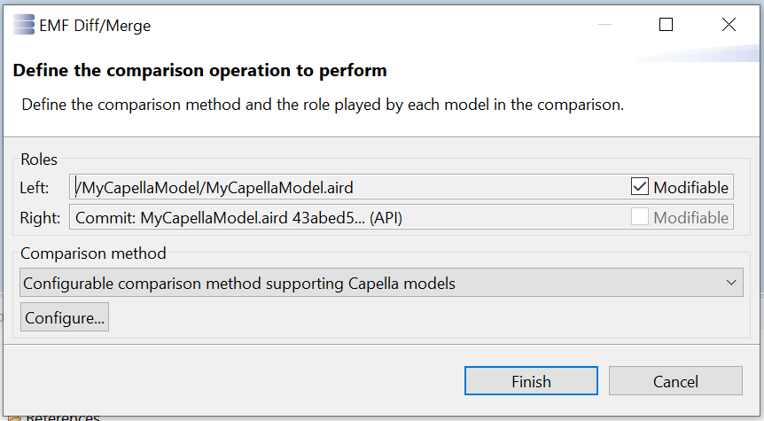
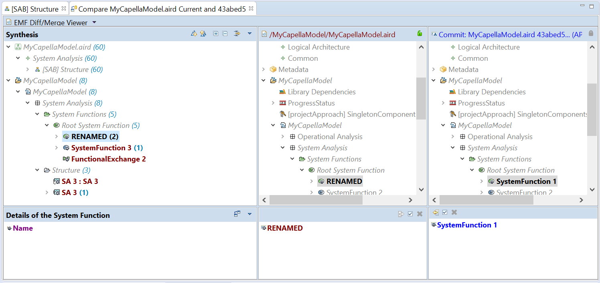
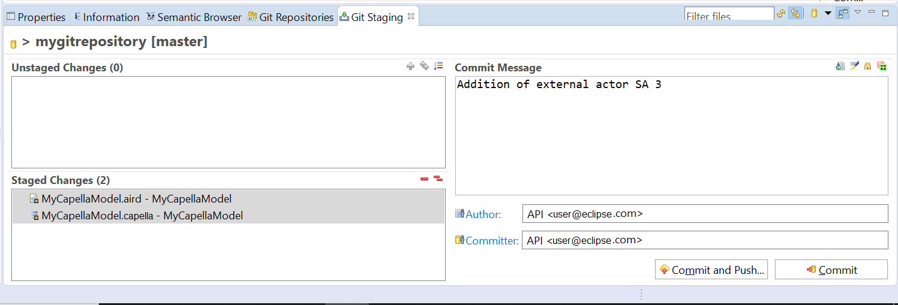
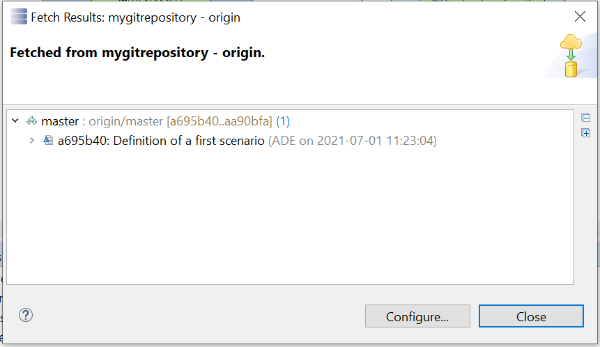
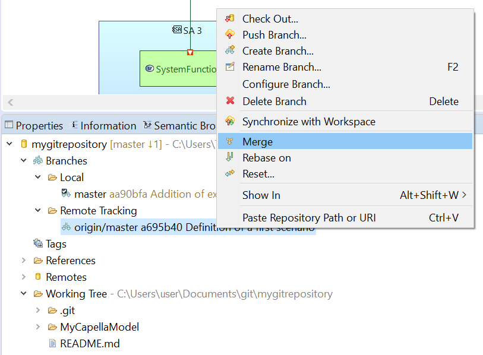
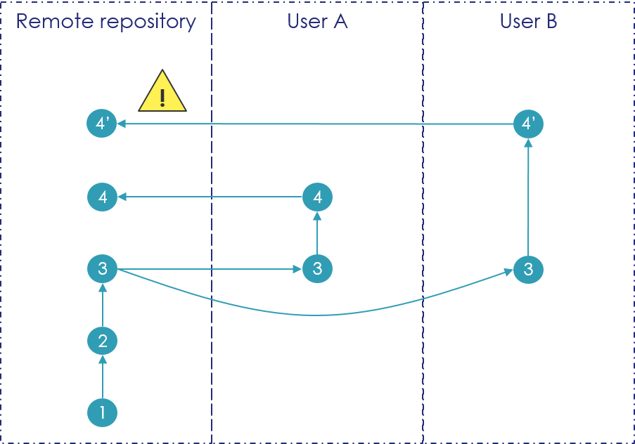
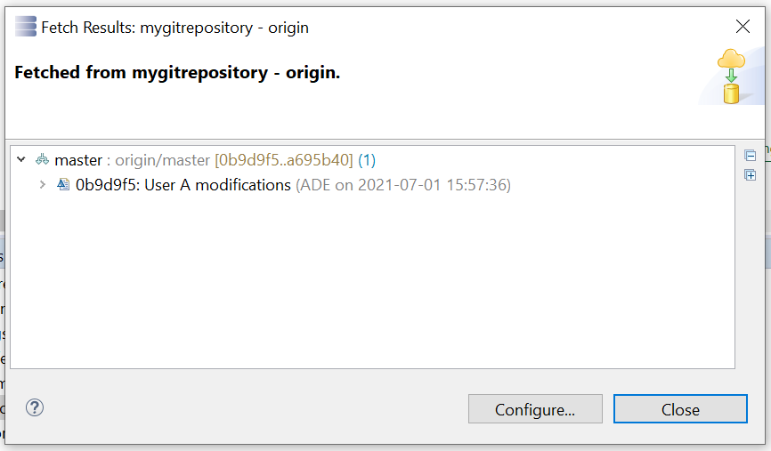

Tutorials
These tutorials assume that you are familiar with Git and you know how it works.
If you are new to Git or to distributed version control systems generally, then you might want to read
Git for Eclipse Users first.
More background and details can be found in the on-line book
Pro Git.
Capella Git Adapter is based on EMF Diff/Merge, help and details about it can be found in the
EMF Diff/Merge Guide.
|

|
Please consider the given process instructions:
- Always validate your model before a commit.
- Select all fragments on commit if the model is fragmented.
- Close the session before a pull, rebase or merge operation.
- To handle large files in Git Repositories, more than 2GB, there are multiple 3rd party implementations that will try to solve the problem, many of them using a similar paradigm as a solution.
- The content of all model files (aird, airdfragment, capella, capellafragment, afm, ...) are declared as ASCII Text and not binary files.
(see Capella : Window > Preferences > Team > File Content)
|
Basic Tutorial
This tutorial provides a step by step walk-through of the Capella Git Adapter.
Git perspective
- To open the Git perspective: go to menu Window > Perspective > Open perspective > Other... > Git.
Creating Repositories
|
|
Some considerations for Git Repositories to be used in Capella:
- Don't create the Repository within the Capella workspace.
- Don't create a Repository with a Capella project as root.
|
- In the Git Repositories view, create a new Git Repository: click "Create a new local Git repository".
-

- In the opened wizard, select a path on your file-system to a non-existing folder, click Finish.
-

- The created Git Repository will be shown in the Git Repositories view.
-

Clone a Git repository
In order to be able to work in a Git repository if you do not want to create a new repository, the first thing to do is to clone this repository.
To clone a remote repository, in Capella, you need to select Window / Show view / Other.
Then find "Git Repositories" under Git and select Open.
This will open a new view in the Capella environment.
From this view, it is possible to:
- clone a remote Git repository
- create a new local Git repository (not connected to a remote repository)
- add an existing local Git repository (add to the view a repository which have already been cloned locally, or a local repository with no remote)
|
|
- Creating a local Git repository can be a good way to perform some version control even without having access to a remote repository
- If you create a local git repository, do not check the option "Create as bare repository"
|
To clone a remote repository, choose "Clone a Git repository".
Then, Capella will ask for the information about the remote repository:
This information should be provided to you by the people managing the remote repositories
When all information is provided, select Next.
Capella will contact the remote repository and retrieve information regarding the existing branches.
After selecting the branches to clone, use Next.
Capella will then ask to define where to create the local repository:
|
|
- The local repository can be created wherever you want on your computer.
- It does not need to be located in MyApp or any specific location.
- However, It should not be located in your Capella workspace (projects from the Git repository will then be imported in the workspace if necessary - see below)
|
Define the target directory then select Finish.
Capella will then clone the remote repository and add the repository to the view.
This view (which can display several Git repositories), display information about:
- Local and remote branches
- Tags
- URL of the remote repository
- Working Tree (the files and folders which are managed in version)
Share a Capella model on Git and commit a first version
Now that we have cloned the remote repository, we are going to add a Capella model to the Git repository for version control.
For this, in the Capella Project Explorer, select the Project (folder containing the Capella model) and use right click, Team / Share Project
This will open a window where we have to define:
- the repository in which we want to store the Capella model (several options may be possible if you have several repositories in the view "Git Repositories")
- define the path within the target repository (if empty, the project will be stored at the root of the repository)
When done, select Finish.
The Project Explorer will now display the name of the repository and the current branch next to the name of the Capella Project.
Moreover, we can see some question mark on the file and folder icon. This is because so far those files have not yet been committed to the repository.
To commit a first version of the files, we need to use: Window / Show view / Other
Then find "Git Staging" under Git and select Open.
This will open a new view in the Capella environment
In this view, we can:
- select files to be committed (by moving them from Unstaged Changes to Staged Changes)
- provide a Commit Message
- provide information about the Author and Committer
Here we are going to commit all of the files and provide a description "First commit"
|

|
When committing a Capella model, all of the files (*.project, *.afm, *.aird and *.melodymodeller) need to be committed consistently in order to avoid corruption of the model!
|
Finally, here we have two different options:
- either Commit (create a new version in the local repository only)
- or Commit and Push (create a new version in the local repository, then push the new version in the remote repository as well)
We are going to use the second option here.
When the push is completed, Capella display a confirmation window.
No action is required here and we can select Close.
|
|
- If we choose "Commit" instead of "Commit and Push" then the new version is only defined in the local repository and the remote repository is not updated.
- To update the remote repository, we can go in the "Git Repositories" view, select origin under Remotes, and use right click, Push.
- This will trigger the push action toward the remote repositor
|
Now we can see that the icons in the Project Explorer are modified and display a yellow cylinder to show that the files are committed in the repository
Also, the Capella model can now be found in the Git Repositories view in the Working Tree
Retrieve model from a Git repository
If we initially clone a non-empty repository, we will directly see all its content in the Working Tree.
If the Working Tree contains Capella models, they can be imported in the Workspace in order to be able to open / modify thembr>
To do so, you need to select the project in the Working Tree, then use right click, Import Projects
Perform a new commit, retrieve history, compare versions
Now lets modify our Capella model to commit a new version of the model.
Once the model is modify, we will see a ">" icon next to the name of the files in the Project Explorer.
This indicate that the files have been modified compared to the last committed version.
At any time, we can use a right click on the aird file, then Compare With to compare the current definition of the model with:
- HEAD Revision : the last commit in the current branch
- Branch, Tag or Reference: to select one specific branch or tag
- Commit : to select one specific commit in the history of the repository
|
|
- Here we see that we can also use the command Replace With.
- However, we need to be careful with this command because it will replace the selected file with a previous version.
- To ensure the consistency of the model, all files need to be in a consistent state (*.aird, *.melodymodeller, *.afm).
- As a result, it is recommended to use the command Replace With on the project (folder) instead of on the files to ensure that all files are in a consistent state.
|
When comparing with the HEAD Revision for example, Capella will first display a configuration window:

Nothing need to be modified here and we can select Finish. Capella will then open the diff / merge window

As a remember we can see here:
- the current version of the model in the middle panel
- the previous commit on the right panel
- the list of differences in the left panel
From this window, we can review differences between the versions, and even revert modifications by transferring elements.
|
|
- If we select the melodymodeller file then use Compare With, we will only see the differences in the model element definitions.
- As if we select the aird file, we see the differences in the model element definitions + the differences in the diagrams
|
To commit a new version in the repository, we need to use the "Git Staging" view again, move the files from Unstaged Changes to Staged Changes and provide a Commit Message.

Finally we can use Commit and Push again. The new version is committed in the local and remote repository.
To see the history of the repository containing the model, we need to use the view "Git Repositories", select the local branch on which we are working and use right click, Show In / History
This will open a new window with the list of commits in the branch and the main information.
When selecting a commit, the full commit message is displayed below with the committed files.
Retrieve a new version
Now lets consider that someone else has been working on the model and has pushed a new version.
This mean that the remote repository has been updated with the new version.
However, our local repository has not yet been updated.
|
|
- There is no notification in Capella that a new version has been pushed to the remote repository!
|
The first step is to resynchronize our local repository with the updated remote repository.
For this, we need to use the window "Git Repositories", select origin in Remotes and use right click, Fetch.
This will open a confirmation window with the result of the Fetch

Here we have only one new commit in the branch master performed by ADE.
Here we need to be careful!
The local repository has retrieved the new commits performed. However, our local branch (on which we are working) does not yet integrate all the new commits.
We can see here that the local branch master and the remote branch origin/master are not at the same state.

We can see that our local branch is one commit late with the indication
There is also this indication in the Project Explorer next to the project name

To integrate the new commits in our local branch (and be able to see the new version of the model), we need to select the remote origin/master branch, then use right click, Merge

In this case, it result in a Fast-forward and the local branch integrate the new definitions of the remote branch
Merge conflicts
In this last case, we are going to consider two different users working on the same model at the same time.
Both User A and User B start from version 3 of the model and perform modification.
User A perform his commit and push first. His version is integrated into the remote repository as the new reference version (version 4).
User B then tries to push is modification. Here the remote repository will not accept his modification because his new version does not use the latest version of the repository (version 4) as starting point, but uses an old version (version 3).

Lets see what happen from the point of view of User B.
User B perform his modification, and then tries to commit and push his modification as usual.
However, when selecting Commit and Push, he gets the following message:
His modification cannot be pushed to the remote branch because they are not following the last commit of the remote branch.
|
|
Note: with the command Commit and Push, only the push is rejected. But our modifications have been committed toward the local repository
|
So we are going to use the command Fetch to retrieve the last modifications performed on the remote repository.
With this, we are able to retrieve the modifications performed by User A

We see now that we are 1 commit ahead of the remote branch, but also 1 commit late:
Now we are going to try to merge our local branch with the remote branch
|
|
Before performing the Merge, we need to close the Capella model by selecting the aird file then right click, Close
|
Here we see that the merge cannot be easily performed and result in a conflict.
Capella detects that the same model has been modified by 2 different people and requires a user action in order to manually merge the modifications performed by the different users.
We can see the elements for which there is a conflict (elements with the double red arrow)
To resolve the conflict, we are going to use a right click on the aird file, then Team / Merge Tool
Again we will have a configuration window.
Here we don't need to modify anything and we can just select Finish
We have now a new diff / merge window from which we have to merge the modifications performed by both User A and User B.

We can also open the Capella model and perform the merge by modifying elements and diagrams by hand.
|
|
- Resolving conflicts in Capella models can be a tedious task if different users have modified the same elements.
- This is why Team 4 Capella has been developed and should be used when requiring several people to modify the same model at the same time.
|
When the merge is completed, User B can now perform a Commit and Push to validate the merge.
Note that the Commit Message is automatically pre-filled to indicate that we have performed a merge.
The Push will now succeed
We can now check the history of the local branch which describes that modifications have been performed in parallel
Advanced Tutorial
This is a continuation of the above basic tutorial.
Create a tag
Like most VCSs, Git has the ability to tag specific points in history as being important. Typically people use this functionality to mark release points (v1.0, and so on). In this section, you’ll learn how to create new tags.
- Open the History View and right-click on the commit you want to tag
- Click
Create Tag... in the menu
-

- -

- Enter the tag name "V1.0"
- Enter the tag message "Version 1.0"
- Click
Create Tag to create the annotated tag
Tags can also be created from the team menu, click
Team > Advanced > Tag..., enter the tag name and message, select the commit you want to tag (default is HEAD) and click OK.
Resolve Conflicts
Conflicts arise when contradicting changes have been made in parallel and an attempt is made to integrate (merge) them. With Git, this may happen for example when two branches are
merged, when a branch is
rebased on another, or when a
pull is done.
|
|
In any case, the session must be closed before the conflict resolving step. This is because during this step, the model contains elements in conflict state, further actions on the session would make the model become completely corrupted.
There are two mechanisms implemented in Capella to make sure that the session is closed during this step:
- When a model is in conflict state, the session cannot be opened, a popup is displayed to inform users about resources being in conflict.
- An already opened session will automatically be closed if a concerning resource enters the conflict state (e.g. following a Git action).
|
- Commit the changes done before with the message "Added Transmit", including the renaming of the function. Be sure to select both .aird and .capella files.
- Right-click the project > Team > Switch to > New branch..., type "maintenance" and validate.
You are now in branch "maintenance".
- -

- Close the session (right-click the .aird file and select "Close"). This is because we are going to modify the content of the filesystem.
- In the History view, right-click the "First changes" commit, right-click "Reset" > "Hard". Branch "maintenance" has been moved back to this past commit.
This will reset the current branch head to "First changes" commit. It resets the index and working tree. Any changes to tracked files in the working tree since "First changes" commit are discarded.
- -

- -

- Open the model again, rename the function again with a different name, add another function and commit.
- In Window > Preferences > Team > Git > History, select "All branches and tags" and click OK.
- In the History view, you can now see the two branches "master" and "maintenance" that have parallel commits.
We are going to merge branch "master" into branch "maintenance".
- -

- Right-click the project and click Team > Merge..., select "master" then "Merge".
-

- -

- A conflict dialog shows up, click OK.
-

- A red icon identifies the conflicting files, here the .aird and .capella files.
They are identified as conflicting because they have been modified in both branches.
-

- Right-click the .aird file and select Team > Merge Tool.
-

- -

- Click OK:
the Capella diff/merge tool shows up. You may only modify the model on the left-hand side, which is initialized with the content it has in branch "maintenance". On the right-hand side, you can see its content in the "master" branch. You may only report changes from the "master" branch to the "maitenance" branch. In the end, the content on the left-hand side will be considered as the merged content.
- Click the "Difference Categories" button in the "Synthesis" section: a dialog opens that allows filtering differences.
-

-
Let us report all elements that were added in the "master" branch. Set the "Added elements" with the right-to-left blue arrow icon to "Focused" mode and click OK: only those differences are now shown.
-

- Select all root elements in the "Synthesis" section and click the "Copy to the left" merge button, the one with the left-to-right arrow icon. Done!
-

-
Let us now focus on real conflicts, i.e., conflicts at the granularity of model elements. Re-open the "Difference Categories" dialog, reset the "Added elements" category to "normal" mode and set the "Conflicts" category to "focused" mode, then press OK.
-

- There is one real conflict: the parallel renaming of the function. You can now see it in both the model and the diagram. Let us first ignore the diagram since in this case it will be able to synchronize with the model.
- Select the diagram in the "Synthesis" view and click the "Ignore on the left" button, the one with the check box icon.
-

- Click the "Next model difference" navigation button, the one with the downward arrow.
-

- The only difference left is selected, which corresponds to the renaming in the model. You have the choice to either keep the name from the "maintenance" branch on the left, or report the name of the "master" branch on the right. Click the "Copy to the left" merge button to opt for the second solution.
-

- -

-
You may now consider the model as merged. Press Ctrl-S to save then close the diff/merge editor. You now have to inform Git that the merge is finished.
|
|
Please make sure that all the conflicts have been resolved before leaving the Merge Tool editor. Any unresolved conflict could lead to a corrupted model.
If somehow the conflict resolving process ends up with a corrupted model and you want to get back to the previous commit, you could just commit the current modification and apply a "Reset" > "Hard" action (an example of this action has been shown in one of previous steps in this tutorial).
|
- Switch back to the Git perspective, select the repository and select the "Git Staging" view at the bottom. You should see the .aird and .capella files in the "Unstaged Changes" section.
-

- Drag and drop these files to the "Staged Changes" section to mark them as merged, then click the Commit button. The merge is officially finished.
-
- Switch back to the Capella perspective and select the "History" view: you can see through the lifelines that you have successfully merged the branches.
-

- Open the System Data Flow diagram: you can see that the contributions of the two branches have been integrated and the rename conflict has been resolved in favor of the "master" branch. You can also see that the editor is in dirty mode (save is enabled): this is because the diagram has automatically updated itself to reflect the change to the name.
Fragmented Model
If you are not familiar with Capella model fragmentation, you can refer to
Fragment Management
When your model is fragmented, you have to select all your fragments in your commits and always use the root aird for compare operation.
Model with libraries
If your model refers to libraries, you have to include manually your modified libraries in your commits in order to keep your model valid.
Limitations / Known Issues
- Diff/Merge 3-way can be improved.
- The session needs to be closed prior to any Fetch, Pull or Rebase. This is due to the fact that files will be changed by Git and those changes need to be synchonized with the Eclipse File System.
- On a fragmented model, Diff/Merge needs to be performed on the root file (not the airdfragment/capellafragment) to ensure that the model is fully loaded during the Diff/Merge analysis.